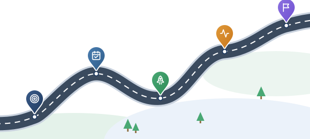

Le 5 fasi operativeUn ciclo di vita strutturato e progressivo. D.M. 166/2025, par. 4.1
1 · DefinizioneAnalisi del contesto e approvazione iniziale
2 · PianificazioneProgettazione di dettaglio e gestione del rischio
3 · AdozioneLancio operativo, formazione e censimento
4 · MonitoraggioVerifica e miglioramento continuo
5 · ConclusioneRendicontazione ed estensione